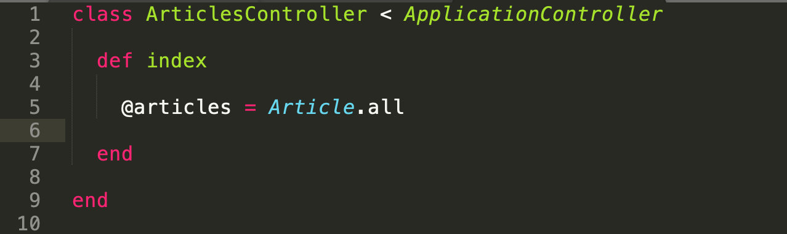
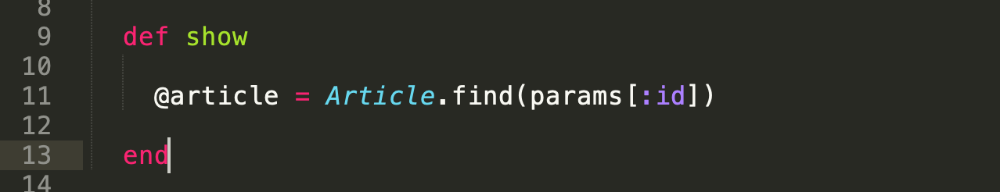
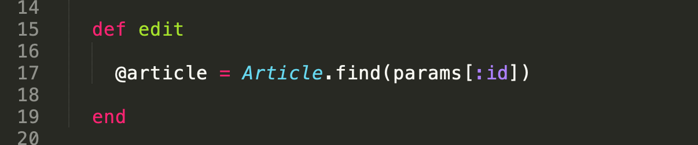
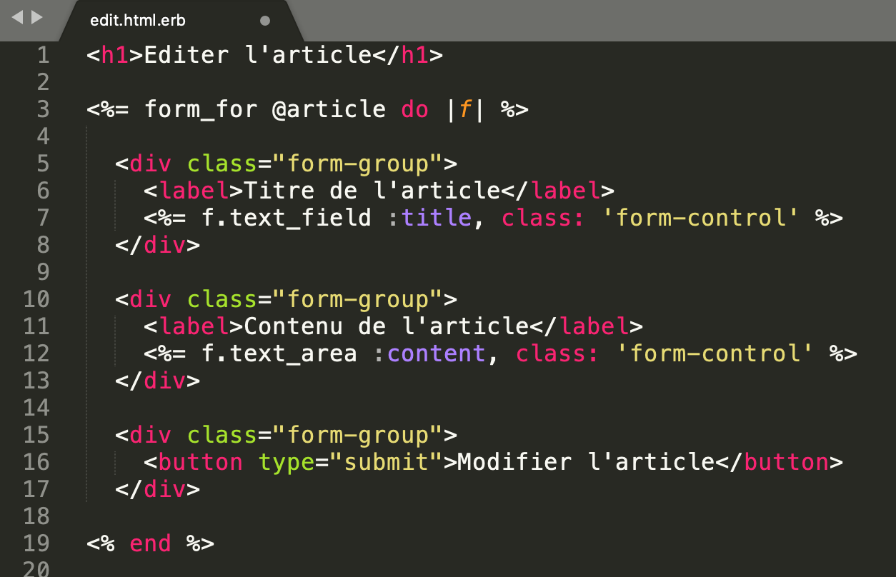
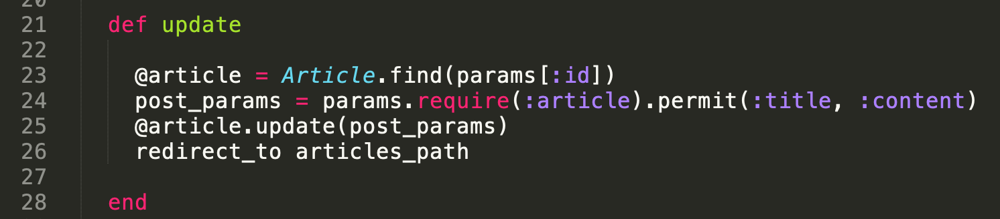
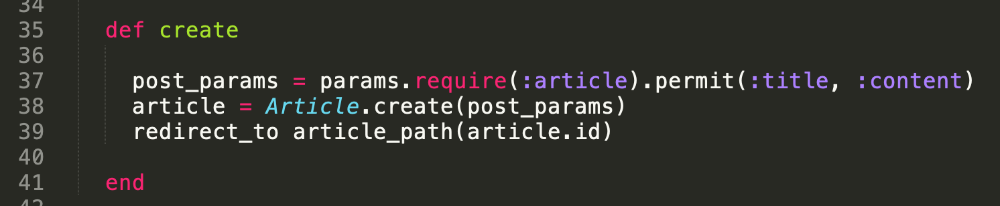
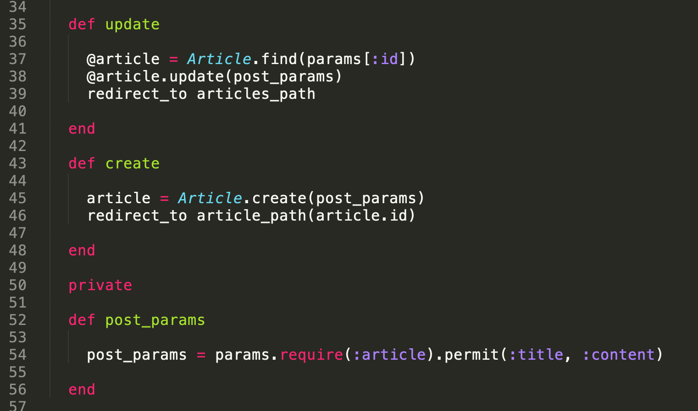
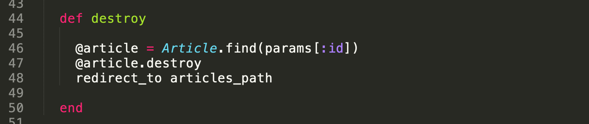

Le CRUD, une partie fondamentale de Rails. Après t'être battu avec tes premiers controllers, nous allons voir comment créer un CRUD complet.
Le terme CRUD fut sûrement popularisé par James Martin dans son livre sorti en 1983 : Managing the Data-base Environment.
Pour le CRUD, nous pouvons te proposer ces ressources externes qui expliquent comment faire un CRUD avec Rails :
Le CRUD est un framework. Lorsque nous créons un site web, nous voulons pouvoir avoir une gestion des contenus, les afficher, les modifier et les supprimer: c'est ce que l'on appelle le CRUD.
Ruby on rails a une convention sur la méthodologie à adopter pour les URL et les méthodes HTTP. Pour la création d'un CRUD, nous donnons un nom à notre 'resources'.
Voici ce que donne resources :articles :
La première étape va être de créer les différentes URL qui correspondent à ce CRUD.
Il existe un raccourcis sur Ruby on Rails, dans le fichier routes.rb vous pouvez utiliser la méthode resources, suivi du nom de la resource. Exemple: resources :articles. Cela a pour effet de créer tout un système de CRUD automatiquement.
Pour lister les routes qui se sont créées, il suffit de taper dans le terminal la commande: $ rails routes.
Pour tester la route de la page index de nos articles, il suffit de rentrer dans le navigateur l'adresse suivante : localhost:3000/articles. La partie /articles nous envoie sur le controller Articles et sur l'action index de celui-ci.
Exemple d'action index qui récupère tous les articles :
Si l'on veut voir un article en particulier, nous pouvons commencer par créer un bouton qui nous emmènera vers celui-ci, en lui indiquant le bon chemin (path) et son id (article.id).
<a href="<%= article_path(article.id)%>" class="btn">Voir l'article</a>Lorsque l'on clique sur ce bouton, nous sommes re-dirigés vers la page show de l'article avec pour URL localhost:3000/articles/:id avec l'id correspondant à l'id de l'article.
Pour l'instant cela nous indique que la page n'existe pas. Il faut en effet aller la créer dans le controller Articles en ajoutant l'action show.
Puis créer la page HTML de la vue show avec un fichier show.html.erb. Exemple :
Maintenant si on veut éditer un article, il faut créer l'action edit dans le controller Articles :
Puis créer la page HTML de la vue edit avec un fichier edit.html.erb
où on y ajoutera un formulaire. Pour cela, nous allons nous aider du
FormHelper de Rails. Pour générer un formulaire qui correspond à un
model en particulier, il y a une méthode qui s'appelle form_for. Cette méthode prend en paramètre l'enregistrement que vous souhaitez modifier (ici @article) et un block qui aura comme paramètre un FormBuilder, qui est un objet qui va nous permettre de générer les différents champs.
Exemple :
Lorsque l'on soumet le formulaire, il nous renvoie une erreur en nous disant qu'il ne trouve pas l'action update. Il faut donc aller créer cette méthode au niveau du controller Articles :
Pour pouvoir modifier un article à partir de la page index, nous pouvons rajouter un bouton qui nous emmènera vers le formulaire d'édition. Ce bouton aura comme attribut href le chemin correspondant à la route d'édition d'un article :
<a href="<%= new_article_path %>" class="btn">Créer un article</a>Avec comme chemin, la route vers la création d'un article. Et enfin, on termine avec la création de la vue qui lui correspond : new.html.erb en récupérant le formulaire de l'édition.
Lorsque l'on soumet le formulaire de création, il nous renvoie de nouveau une erreur car il ne trouve pas l'action create que l'on va tout de suite créer dans le controller Articles :
On peut voir qu'on se répète entre la def update et de la def create avec le post_params = params.require(:article).permit(:title, :content). Le mieux est de créer une méthode qui permet de faire l'opération ci-dessus.
On va donc créer une méthode privée, ce qui donnera ceci :
Pour finir, nous allons créer la méthode pour supprimer un article. Pour cela nous devons créer un formulaire qui appelle la méthode DELETE.
Il existe un raccourcis qui permet de créer des liens qui vont avoir une méthode.
Grâce aux librairies injectées par Rails, notamment le javascript
jquery_ujs, qui nous permet de rajouter des fonctionnalités à l'HTML à
travers l'attribut data. Par exemple, data-confirm="êtes-vous sur?",
nous affiche un message d'alerte. Dans notre cas, nous voulons que
notre lien soit posté avec une méthode particulière DELETE, nous pouvons
donc utiliser l'attribut : data-method="DELETE".
Au niveau du controller Articles, il faut créer la méthode destroy :
Après toutes ces étapes, nous avons mis en place un CRUD tout simplement.
Nous allons revoir les étapes avec une nouvelle migration.
Il y a plusieurs technique pour ceci, on peut créer la table, puis le model, ou bien créer tout d'un coup.
$ rails g migration CreateCategories name:string slug:string
$ rails db:migrate
$ rails g model Category --skip #(--skip permet de sauter la migration qui est faite juste avant)$ rails g model Category name:string slug:string
$ rails db:migrateDans le fichier routes.rb :
resources :categories)Il est possible de vérifier que ce soit bien pris en compte en faisant $ rails routes.)
$ rails g controller Categories index show new create edit update destroyapp/views/categoriesnew.html.erb (formulaireindex.html.erbshow.html.erbedit.html.erb (formulaire)<a href="<%= new_category_path %>" class="btn">Créer une catégorie</a><a href="<%= category_path(category.id) %>" class="btn">Voir la catégorie</a><a href="<%= edit_category_path(category.id) %>" class="btn">Modifier la catégorie</a> <a href="<%= category_path(category.id) %>"
class="btn" data-confirm="êtes-vous sur?"
data-method="DELETE">Supprimer la catégorie</a>Il existe dans Rails une commande qui permet de faire tout cela très rapidement : le scaffold.
Exemple avec un model User :
$ rails g scaffold User username:string bio:textBAM, tout le CRUD est fait, avec même des exemples de controller fait "proprement".
Cela va créer :
Y'a juste à migrer et à toi la gloire.
Mais dis-donc Jamy, je peux faire tout le temps des scaffolds par conséquence ?
Excellente question. Le scaffold est une commande puissante qui permet de bien gagner du temps quand on code (la force majeure de Rails, qui grâce à ce genre d'astuces te permet d'avoir ton Airbnb en quelques jours de code). Cependant, le scaffold est une commande à utiliser avec parcimonie.
Prenons l'exemple d'un CRUD de tweets que tu aimerais bien faire. Tu pourrais faire un scaffold pour la faire. Cependant, le scaffold va aussi te générer la commande Destroy. Sauf que tu n'as pas vraiment envie que tout le monde détruise les tweets de tout le monde. Bah il faudra que tu enlèves les références au Destroy à la main. Alors pour une méthode de controller, ça vaut le coup, mais imagine que tu veux enlever d'autres méthodes comme ça : tu finis par perdre du temps.
C'est une belle commande, mais réfléchis bien avant de la lancer ;)
La vidéo de Grafikart est géniale, car tu as pile poile le niveau pour tout comprendre 😻
Pour le moment, c'est tout !
Dans ce projet, tu vas faire ton premier CRUD entier en Rails. Je sais pas si tu te rends compte de ce que ça représente : le CRUD sur une ressource, c'est la base de tout site web ! Et d'ici ce soir, t'en auras fait un : Pwaaaa ! C'est ouf !
Pour avoir une vision complète, nous allons travailler sur les potins en acceptant toutes les actions du CRUD : on va les créer, les afficher, les modifier et les supprimer. Et puisqu'à THP on aime bien te pousser à fond, on va même te demander d'implémenter une partie de CRUD sur les commentaires de potins. De la bombe 💣.
⚠️Bonnes pratiques ⚠️ : nous te conseillons de
faire des commits à chaque sous-chapitre de cet exercice. Ainsi, si
jamais tu veux tester quelque chose, tu peux écrire ton code et
l'exécuter quitte à faire un git reset --hard pour revenir
au commit précédent. Très pratique pour repartir de la dernière étape
fonctionnelle quand tu as un truc qui merde 💩
Voici ce qui t'attend dans le projet du jour :
Inutile de te rappeler que toutes tes routes doivent être en mode REST : l'usage de resources est ici obligatoire.
Allez, c'est parti ! Commence par reprendre ton projet d'hier.
Maintenant que tu as fait tes premières pages, et que tu sais qu'on
peut faire du Bootstrap avec un simple CDN, nous allons faire en sorte
que notre site ressemble à quelque chose de potable. Assure-toi que ton
projet d'hier soit bien connecté au CDN de Bootstrap.
Maintenant, balade-toi sur les pages d'exemples Bootstrap
et quand tu vois un élément que tu veux utiliser pour ton Gossip
Project, regarde le code source de la page et récupère le nom des
classes utilisées pour le construire. Quelques suggestions du
chef :
Pour le front, fais comme tu le sens avec le double objectif est que 1) le rendu soit présentable, et 2) tu n'y passes pas trop de temps. Le front, si on se laisse prendre au jeu, on peut y passer un temps infini et la leçon du jour, c'est de faire un back-end CRUD !
Allez on se lance. On va te donner les directives pour chaque morceau du CRUD, mais on te laisse tout coder. Il faudra ne pas hésiter à te rapporter aux cours des 2 journées précédentes pour 1) faire des routes propres, 2) faire des controllers avec les bonnes méthodes CRUD et 3) afficher les informations dans les views.
Let's GO !
L'objectif de cette partie est que tu crées la page potin (la page
show qui affiche un potin spécifique). C’est-à-dire que quand tu tapes
l'URL /gossips/3, tu arrives sur la page affichant le contenu du potin portant l'ID 3. La page potin doit afficher :
À partir de la page d'accueil, qui contient l'index des potins, chaque potin doit être accompagné d'un lien pointant vers sa propre page.
L'objectif de cette partie est de faire de même pour la page utilisateur. Cette page doit afficher :
Sur la page show d'un potin, l'utilisateur doit pouvoir en savoir plus sur l'auteur du potin en question. Il doit y avoir un lien vers la page show de l'auteur.
Allez, dernière page show : la page pour afficher le détail d'une ville. Cette page devra afficher :
La page ville doit être accessible depuis la page utilisateur (lien vers la ville de l'utilisateur) et depuis la page potin (lien vers la ville de l'auteur).
Maintenant nous allons faire en sorte de pouvoir éditer les potins 🙌
Pour ceci, nous allons faire une page /gossips/:id/edit qui affichera un formulaire pour éditer le potin. Ce formulaire devra pointer vers la méthode #update qui aura pour rôle d'actualiser le potin en BDD. Comme pour la méthode #create, cette méthode a des conventions bien précises qui ressemblent à ceci :
def update
@model = Model.find(params[:id])
if @model.update(tes_params)
redirect_to @model
else
render :edit
end
endSi tu sors de ces clous, tu as presque 100 % de chances de te gourer (la seule exception étant la possibilité d'afficher une alerte du genre "Potin bien mis à jour !").
Astuce : essaye de pré-remplir les champs du formulaire d'édition avec les informations du potin. Ainsi, l'utilisateur n'a qu'à changer les quelques infos qu'il souhaite : pas besoin de tout retaper.
À partir de la page potin, il est possible de détruire le potin avec un lien pour le faire. Implémente cette fonctionnalité. Après avoir détruit le potin, l'utilisateur doit être redirigé vers l'index des potins.
Ce site de gossips ne serait pas complet sans une section de commentaires où les gens pourraient commenter les ragots des moussaillons. Nous allons donc ajouter une fonctionnalité de commentaires à nos chers gossips.
Ci-dessous on te détaille ce qu'on attend de toi.
Un commentaire peut être ajouté à un potin uniquement depuis la page show de ce dernier. La page contiendra donc un formulaire pour renseigner le texte du commentaire. Tout comme pour les potins, si un nouveau commentaire est rajouté via ce formulaire il sera assigné à notre utilisateur anonyme (pour le moment).
La page show du gossip affichera tous les commentaires liés à ce gossip, dans l'ordre que tu veux. Pour chaque commentaire, on pourra lire son auteur (ça ne sera pas forcément ton utilisateur anonyme, tu peux aussi faire un seed avec des utilisateurs créés en base), son texte, et on disposera d'un lien pour le modifier.
Crée la page edit du commentaire (page pour le modifier).
Cette page permettra également de détruire le commentaire via un bouton.
Dans la page d'index, chaque potin affiche le nombre de commentaires qui lui sont liés.
Allez, dernier exercice de la journée. Nous allons coder le fait de pouvoir ajouter un tag à la création du potin. Pour ceci, voici comment tu vas faire :
Une fois que tu as rajouté cette fonctionnalité à la création d'un potin, ajoute-la aussi lors de l'édition du potin .
Un Gossip Project qui commence à avoir de la gueule !